What this is. Every planner in OpenPlan Labs, run over shared problem sets by one harness that records timeouts and errors as results rather than dropping them. 5 suite(s), 960 recorded runs. What “solved” means · How to reproduce this.
Weekly regression suiterunner-grade
A small cross-section of both families, run on a shared GitHub Actions runner every week. Its job is to notice that something stopped working, not to rank hardware. Compare coverage and node counts across runs; ignore the seconds.
Runner-grade timings. This suite was measured on a shared GitHub Actions runner. Absolute wall times there vary by a factor of two or more between runs and tell you nothing about the hardware a planner would see in practice. Coverage, plan cost, node counts and validity are still exact — those do not depend on how fast the machine was. Compare times within a single run of this table, never across runs or against your laptop.
Leaderboard
| Configuration | Family | Coverage | Solved | Instances | Timeouts | Errors | Unsolved | Median time solved only | Total time solved only | Expanded |
|---|---|---|---|---|---|---|---|---|---|---|
| jupyddl:gbfs/hff | classical | 100% | 8 | 8 | 0 | 0 | 0 | 2.1 ms | 518.0 ms | 118 |
| jupyddl:bfs | classical | 75% | 6 | 8 | 2 | 0 | 0 | 1.7 ms | 11.8 ms | 156 |
| jupyddl:astar/hmax | classical | 75% | 6 | 8 | 2 | 0 | 0 | 1.9 ms | 16.2 ms | 153 |
| jupyddl:astar/lmcut | classical | 75% | 6 | 8 | 2 | 0 | 0 | 2.7 ms | 54.6 ms | 153 |
| pymapf:pibt | mapf | 100% | 3 | 3 | 0 | 0 | 0 | 4.4 ms | 15.9 ms | 155 |
| pymapf:lacam | mapf | 100% | 3 | 3 | 0 | 0 | 0 | 4.8 ms | 17.1 ms | 155 |
| pymapf:prioritized | mapf | 100% | 3 | 3 | 0 | 0 | 0 | 3.5 ms | 21.7 ms | 84 |
| pymapf:cbs | mapf | 67% | 2 | 3 | 1 | 0 | 0 | 1.7 ms | 3.3 ms | 987 |
Both timing columns are computed over the instances a configuration actually solved, so each row has a different denominator and the columns are not comparable across rows. A configuration that solves only the easy instances will post the fastest time on this table. Read them alongside coverage, never instead of it.
Figures
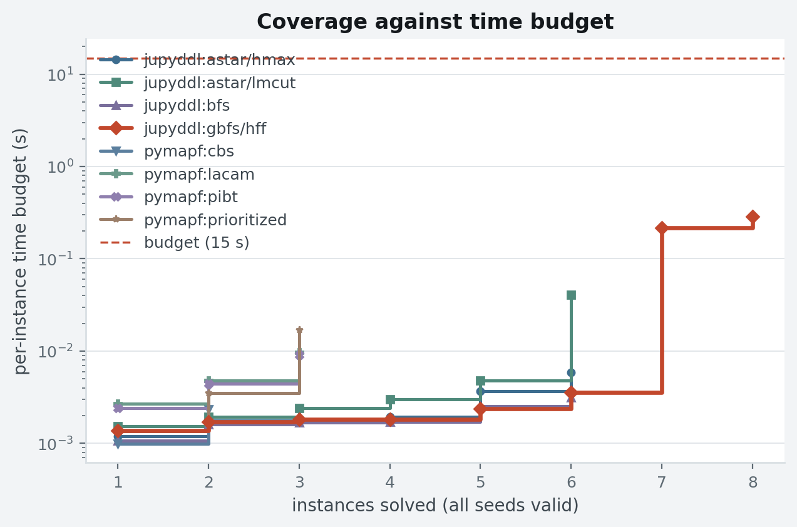
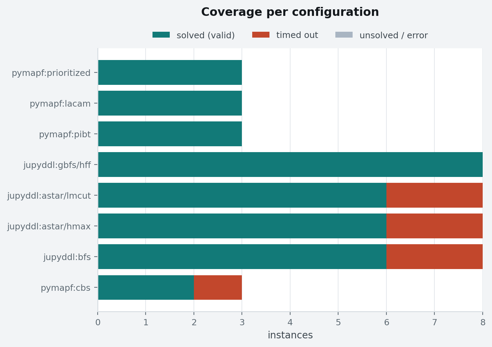
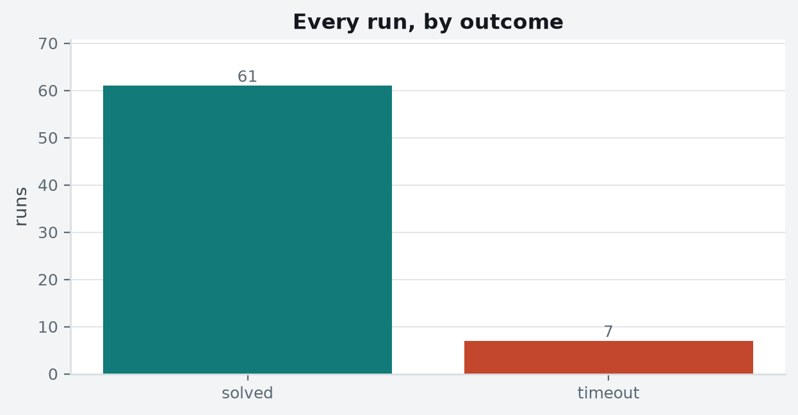
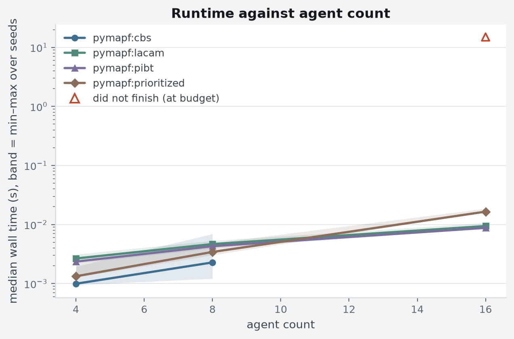
Every instance
| Instance | Configuration | Outcome | Median time | Min | Max | Cost | Length | Makespan | Expanded | Samples seeds x reps | Note |
|---|---|---|---|---|---|---|---|---|---|---|---|
| blocksworld/problem | jupyddl:astar/hmax | solved | 1.2 ms | 1.2 ms | 1.2 ms | 2 | 2 | — | 2 | 1/1 | |
| miconic/s1-0 | jupyddl:astar/hmax | solved | 1.8 ms | 1.8 ms | 1.8 ms | 4 | 4 | — | 4 | 1/1 | |
| miconic/s1-1 | jupyddl:astar/hmax | solved | 1.8 ms | 1.8 ms | 1.8 ms | 3 | 3 | — | 3 | 1/1 | |
| miconic/s10-0 | jupyddl:astar/hmax | timeout | — | — | — | — | — | — | — | 0/1 | planner stopped on its internal time limit |
| miconic/s11-0 | jupyddl:astar/hmax | timeout | — | — | — | — | — | — | — | 0/1 | planner stopped on its internal time limit |
| pallet/problem | jupyddl:astar/hmax | solved | 5.9 ms | 5.9 ms | 5.9 ms | 12 | 12 | — | 127 | 1/1 | |
| switch/problem | jupyddl:astar/hmax | solved | 3.7 ms | 3.7 ms | 3.7 ms | 3 | 3 | — | 5 | 1/1 | |
| tsp/problem | jupyddl:astar/hmax | solved | 1.9 ms | 1.9 ms | 1.9 ms | 15 | 5 | — | 12 | 1/1 | |
| blocksworld/problem | jupyddl:astar/lmcut | solved | 1.5 ms | 1.5 ms | 1.5 ms | 2 | 2 | — | 2 | 1/1 | |
| miconic/s1-0 | jupyddl:astar/lmcut | solved | 2.4 ms | 2.4 ms | 2.4 ms | 4 | 4 | — | 4 | 1/1 | |
| miconic/s1-1 | jupyddl:astar/lmcut | solved | 1.9 ms | 1.9 ms | 1.9 ms | 3 | 3 | — | 3 | 1/1 | |
| miconic/s10-0 | jupyddl:astar/lmcut | timeout | — | — | — | — | — | — | — | 0/1 | planner stopped on its internal time limit |
| miconic/s11-0 | jupyddl:astar/lmcut | timeout | — | — | — | — | — | — | — | 0/1 | planner stopped on its internal time limit |
| pallet/problem | jupyddl:astar/lmcut | solved | 40.9 ms | 40.9 ms | 40.9 ms | 12 | 12 | — | 127 | 1/1 | |
| switch/problem | jupyddl:astar/lmcut | solved | 4.8 ms | 4.8 ms | 4.8 ms | 3 | 3 | — | 5 | 1/1 | |
| tsp/problem | jupyddl:astar/lmcut | solved | 3.0 ms | 3.0 ms | 3.0 ms | 15 | 5 | — | 12 | 1/1 | |
| blocksworld/problem | jupyddl:bfs | solved | 1.1 ms | 1.1 ms | 1.1 ms | 2 | 2 | — | 2 | 1/1 | |
| miconic/s1-0 | jupyddl:bfs | solved | 1.7 ms | 1.7 ms | 1.7 ms | 4 | 4 | — | 4 | 1/1 | |
| miconic/s1-1 | jupyddl:bfs | solved | 1.7 ms | 1.7 ms | 1.7 ms | 3 | 3 | — | 4 | 1/1 | |
| miconic/s10-0 | jupyddl:bfs | timeout | — | — | — | — | — | — | — | 0/1 | planner stopped on its internal time limit |
| miconic/s11-0 | jupyddl:bfs | timeout | — | — | — | — | — | — | — | 0/1 | planner stopped on its internal time limit |
| pallet/problem | jupyddl:bfs | solved | 2.5 ms | 2.5 ms | 2.5 ms | 12 | 12 | — | 124 | 1/1 | |
| switch/problem | jupyddl:bfs | solved | 3.1 ms | 3.1 ms | 3.1 ms | 3 | 3 | — | 4 | 1/1 | |
| tsp/problem | jupyddl:bfs | solved | 1.6 ms | 1.6 ms | 1.6 ms | 15 | 5 | — | 18 | 1/1 | |
| blocksworld/problem | jupyddl:gbfs/hff | solved | 1.4 ms | 1.4 ms | 1.4 ms | 2 | 2 | — | 2 | 1/1 | |
| miconic/s1-0 | jupyddl:gbfs/hff | solved | 1.8 ms | 1.8 ms | 1.8 ms | 4 | 4 | — | 4 | 1/1 | |
| miconic/s1-1 | jupyddl:gbfs/hff | solved | 1.8 ms | 1.8 ms | 1.8 ms | 3 | 3 | — | 3 | 1/1 | |
| miconic/s10-0 | jupyddl:gbfs/hff | solved | 217.7 ms | 217.7 ms | 217.7 ms | 35 | 35 | — | 43 | 1/1 | |
| miconic/s11-0 | jupyddl:gbfs/hff | solved | 287.6 ms | 287.6 ms | 287.6 ms | 39 | 39 | — | 46 | 1/1 | |
| pallet/problem | jupyddl:gbfs/hff | solved | 2.4 ms | 2.4 ms | 2.4 ms | 12 | 12 | — | 12 | 1/1 | |
| switch/problem | jupyddl:gbfs/hff | solved | 3.6 ms | 3.6 ms | 3.6 ms | 3 | 3 | — | 3 | 1/1 | |
| tsp/problem | jupyddl:gbfs/hff | solved | 1.7 ms | 1.7 ms | 1.7 ms | 15 | 5 | — | 5 | 1/1 | |
| random_obstacles/16x16/n16/d0.15 | pymapf:cbs | partial (timeout) | 1.43 s | 133.6 ms | 2.72 s | 173.5 | — | 21.5 | 488 | 2/3 | time limit (15s) reached after 4474 nodes |
| random_obstacles/16x16/n4/d0.15 | pymapf:cbs | solved | 995 µs | 945 µs | 1.9 ms | 42 | — | 15 | 1 | 3/3 | |
| random_obstacles/16x16/n8/d0.15 | pymapf:cbs | solved | 2.3 ms | 1.2 ms | 6.9 ms | 64 | — | 14 | 2 | 3/3 | |
| random_obstacles/16x16/n16/d0.15 | pymapf:lacam | solved | 9.6 ms | 9.5 ms | 10.7 ms | 191 | — | 19 | 19 | 3/3 | |
| random_obstacles/16x16/n4/d0.15 | pymapf:lacam | solved | 2.7 ms | 2.6 ms | 3.2 ms | 44 | — | 16 | 16 | 3/3 | |
| random_obstacles/16x16/n8/d0.15 | pymapf:lacam | solved | 4.8 ms | 4.5 ms | 5.3 ms | 64 | — | 14 | 14 | 3/3 | |
| random_obstacles/16x16/n16/d0.15 | pymapf:pibt | solved | 9.1 ms | 8.7 ms | 9.9 ms | 191 | — | 19 | 19 | 3/3 | |
| random_obstacles/16x16/n4/d0.15 | pymapf:pibt | solved | 2.4 ms | 2.3 ms | 2.7 ms | 44 | — | 16 | 16 | 3/3 | |
| random_obstacles/16x16/n8/d0.15 | pymapf:pibt | solved | 4.4 ms | 4.1 ms | 4.6 ms | 64 | — | 14 | 14 | 3/3 | |
| random_obstacles/16x16/n16/d0.15 | pymapf:prioritized | solved | 16.9 ms | 16.5 ms | 19.2 ms | 177 | — | 19 | 16 | 3/3 | |
| random_obstacles/16x16/n4/d0.15 | pymapf:prioritized | solved | 1.4 ms | 1.3 ms | 2.2 ms | 42 | — | 15 | 4 | 3/3 | |
| random_obstacles/16x16/n8/d0.15 | pymapf:prioritized | solved | 3.5 ms | 3.2 ms | 4.9 ms | 64 | — | 14 | 8 | 3/3 |
Classical planning — coverage
Eighteen instances spanning trivial to genuinely hard for a pure-Python planner, run over six jupyddl configurations with a 20-second per-instance budget. Read the cactus plot rather than the mean runtime: the configurations differ in how many instances they finish at all, not in how fast they finish the easy ones.
Leaderboard
| Configuration | Family | Coverage | Solved | Instances | Timeouts | Errors | Unsolved | Median time solved only | Total time solved only | Expanded |
|---|---|---|---|---|---|---|---|---|---|---|
| jupyddl:gbfs/hff | classical | 89% | 16 | 18 | 0 | 1 | 1 | 2.4 ms | 1.71 s | 368 |
| jupyddl:gbfs/hadd | classical | 89% | 16 | 18 | 0 | 1 | 1 | 2.4 ms | 1.74 s | 383 |
| jupyddl:bfs | classical | 50% | 9 | 18 | 7 | 1 | 1 | 995 µs | 11.4 ms | 170 |
| jupyddl:dijkstra | classical | 50% | 9 | 18 | 7 | 1 | 1 | 1.0 ms | 12.0 ms | 201 |
| jupyddl:astar/hmax | classical | 50% | 9 | 18 | 7 | 1 | 1 | 1.2 ms | 16.7 ms | 180 |
| jupyddl:astar/lmcut | classical | 50% | 9 | 18 | 7 | 1 | 1 | 2.0 ms | 52.2 ms | 164 |
Both timing columns are computed over the instances a configuration actually solved, so each row has a different denominator and the columns are not comparable across rows. A configuration that solves only the easy instances will post the fastest time on this table. Read them alongside coverage, never instead of it.
Figures
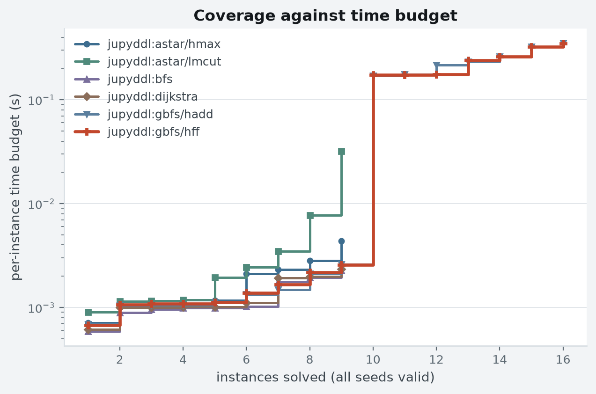
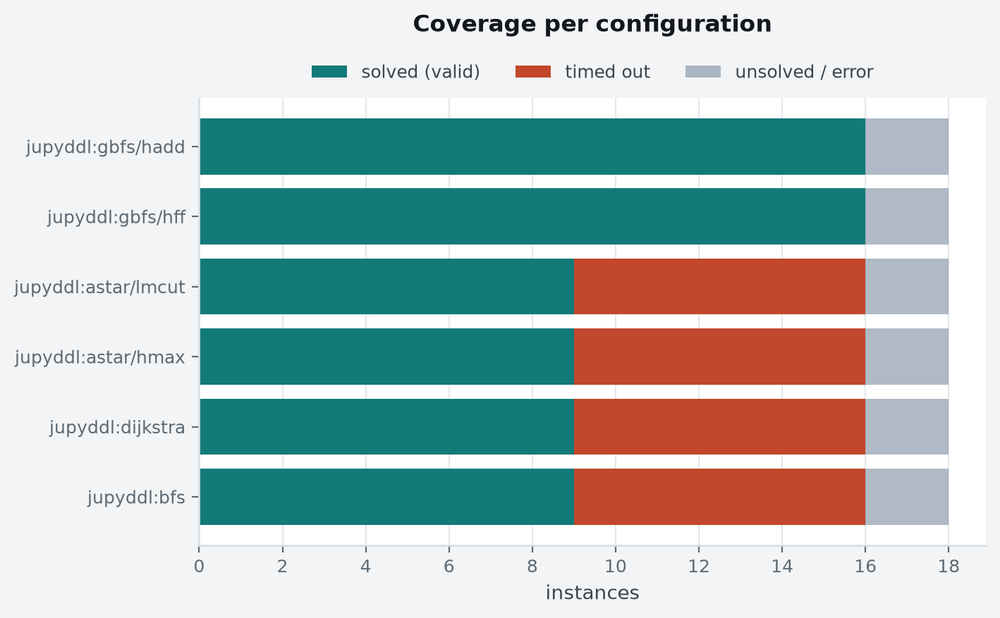
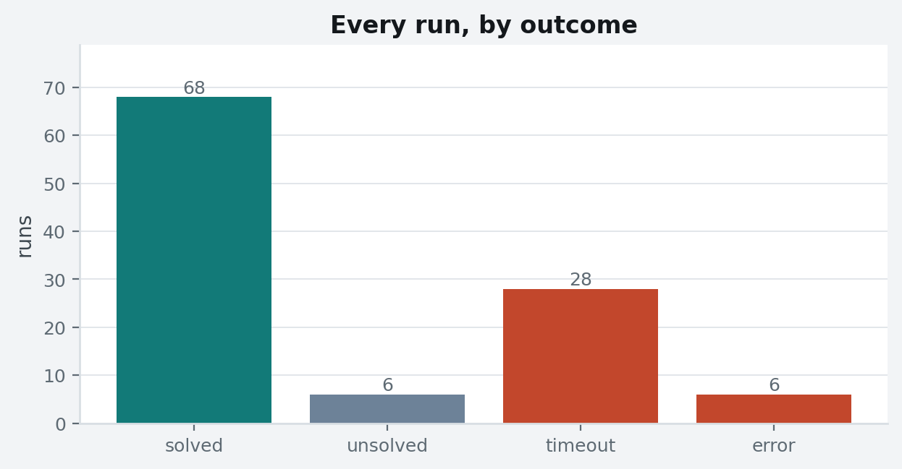
Every instance
| Instance | Configuration | Outcome | Median time | Min | Max | Cost | Length | Makespan | Expanded | Samples seeds x reps | Note |
|---|---|---|---|---|---|---|---|---|---|---|---|
| blocksworld/problem | jupyddl:astar/hmax | solved | 709 µs | 709 µs | 709 µs | 2 | 2 | — | 2 | 1/1 | |
| dinner/problem | jupyddl:astar/hmax | solved | 2.1 ms | 2.1 ms | 2.1 ms | 1 | 1 | — | 1 | 1/1 | |
| flip/problem | jupyddl:astar/hmax | solved | 2.3 ms | 2.3 ms | 2.3 ms | 3 | 3 | — | 22 | 1/1 | |
| grid/problem | jupyddl:astar/hmax | error | — | — | — | — | — | — | — | 0/1 | jupyddl.parser.ast.UnsupportedFeatureError: nested/numeric term in atom is not supported: ['wall', 'xpos', ['+', 'ypos', '1']] |
| miconic/s1-0 | jupyddl:astar/hmax | solved | 1.0 ms | 1.0 ms | 1.0 ms | 4 | 4 | — | 4 | 1/1 | |
| miconic/s1-1 | jupyddl:astar/hmax | solved | 1.1 ms | 1.1 ms | 1.1 ms | 3 | 3 | — | 3 | 1/1 | |
| miconic/s1-2 | jupyddl:astar/hmax | solved | 1.1 ms | 1.1 ms | 1.1 ms | 4 | 4 | — | 4 | 1/1 | |
| miconic/s10-0 | jupyddl:astar/hmax | timeout | — | — | — | — | — | — | — | 0/1 | planner stopped on its internal time limit |
| miconic/s10-1 | jupyddl:astar/hmax | timeout | — | — | — | — | — | — | — | 0/1 | planner stopped on its internal time limit |
| miconic/s10-2 | jupyddl:astar/hmax | timeout | — | — | — | — | — | — | — | 0/1 | planner stopped on its internal time limit |
| miconic/s11-0 | jupyddl:astar/hmax | timeout | — | — | — | — | — | — | — | 0/1 | planner stopped on its internal time limit |
| miconic/s11-1 | jupyddl:astar/hmax | timeout | — | — | — | — | — | — | — | 0/1 | planner stopped on its internal time limit |
| miconic/s12-0 | jupyddl:astar/hmax | timeout | — | — | — | — | — | — | — | 0/1 | planner stopped on its internal time limit |
| miconic/s12-1 | jupyddl:astar/hmax | timeout | — | — | — | — | — | — | — | 0/1 | planner stopped on its internal time limit |
| pallet/problem | jupyddl:astar/hmax | solved | 4.4 ms | 4.4 ms | 4.4 ms | 12 | 12 | — | 127 | 1/1 | |
| switch/problem | jupyddl:astar/hmax | solved | 2.8 ms | 2.8 ms | 2.8 ms | 3 | 3 | — | 5 | 1/1 | |
| tsp/problem | jupyddl:astar/hmax | solved | 1.2 ms | 1.2 ms | 1.2 ms | 15 | 5 | — | 12 | 1/1 | |
| vehicle/problem | jupyddl:astar/hmax | unsolved | — | — | — | — | — | — | — | 0/1 | search space exhausted without finding a plan |
| blocksworld/problem | jupyddl:astar/lmcut | solved | 904 µs | 904 µs | 904 µs | 2 | 2 | — | 2 | 1/1 | |
| dinner/problem | jupyddl:astar/lmcut | solved | 2.5 ms | 2.5 ms | 2.5 ms | 1 | 1 | — | 1 | 1/1 | |
| flip/problem | jupyddl:astar/lmcut | solved | 7.7 ms | 7.7 ms | 7.7 ms | 3 | 3 | — | 6 | 1/1 | |
| grid/problem | jupyddl:astar/lmcut | error | — | — | — | — | — | — | — | 0/1 | jupyddl.parser.ast.UnsupportedFeatureError: nested/numeric term in atom is not supported: ['wall', 'xpos', ['+', 'ypos', '1']] |
| miconic/s1-0 | jupyddl:astar/lmcut | solved | 1.1 ms | 1.1 ms | 1.1 ms | 4 | 4 | — | 4 | 1/1 | |
| miconic/s1-1 | jupyddl:astar/lmcut | solved | 1.2 ms | 1.2 ms | 1.2 ms | 3 | 3 | — | 3 | 1/1 | |
| miconic/s1-2 | jupyddl:astar/lmcut | solved | 1.2 ms | 1.2 ms | 1.2 ms | 4 | 4 | — | 4 | 1/1 | |
| miconic/s10-0 | jupyddl:astar/lmcut | timeout | — | — | — | — | — | — | — | 0/1 | planner stopped on its internal time limit |
| miconic/s10-1 | jupyddl:astar/lmcut | timeout | — | — | — | — | — | — | — | 0/1 | planner stopped on its internal time limit |
| miconic/s10-2 | jupyddl:astar/lmcut | timeout | — | — | — | — | — | — | — | 0/1 | planner stopped on its internal time limit |
| miconic/s11-0 | jupyddl:astar/lmcut | timeout | — | — | — | — | — | — | — | 0/1 | planner stopped on its internal time limit |
| miconic/s11-1 | jupyddl:astar/lmcut | timeout | — | — | — | — | — | — | — | 0/1 | planner stopped on its internal time limit |
| miconic/s12-0 | jupyddl:astar/lmcut | timeout | — | — | — | — | — | — | — | 0/1 | planner stopped on its internal time limit |
| miconic/s12-1 | jupyddl:astar/lmcut | timeout | — | — | — | — | — | — | — | 0/1 | planner stopped on its internal time limit |
| pallet/problem | jupyddl:astar/lmcut | solved | 32.2 ms | 32.2 ms | 32.2 ms | 12 | 12 | — | 127 | 1/1 | |
| switch/problem | jupyddl:astar/lmcut | solved | 3.5 ms | 3.5 ms | 3.5 ms | 3 | 3 | — | 5 | 1/1 | |
| tsp/problem | jupyddl:astar/lmcut | solved | 2.0 ms | 2.0 ms | 2.0 ms | 15 | 5 | — | 12 | 1/1 | |
| vehicle/problem | jupyddl:astar/lmcut | unsolved | — | — | — | — | — | — | — | 0/1 | search space exhausted without finding a plan |
| blocksworld/problem | jupyddl:bfs | solved | 591 µs | 591 µs | 591 µs | 2 | 2 | — | 2 | 1/1 | |
| dinner/problem | jupyddl:bfs | solved | 1.9 ms | 1.9 ms | 1.9 ms | 1 | 1 | — | 1 | 1/1 | |
| flip/problem | jupyddl:bfs | solved | 898 µs | 898 µs | 898 µs | 3 | 3 | — | 9 | 1/1 | |
| grid/problem | jupyddl:bfs | error | — | — | — | — | — | — | — | 0/1 | jupyddl.parser.ast.UnsupportedFeatureError: nested/numeric term in atom is not supported: ['wall', 'xpos', ['+', 'ypos', '1']] |
| miconic/s1-0 | jupyddl:bfs | solved | 1.0 ms | 1.0 ms | 1.0 ms | 4 | 4 | — | 4 | 1/1 | |
| miconic/s1-1 | jupyddl:bfs | solved | 991 µs | 991 µs | 991 µs | 3 | 3 | — | 4 | 1/1 | |
| miconic/s1-2 | jupyddl:bfs | solved | 995 µs | 995 µs | 995 µs | 4 | 4 | — | 4 | 1/1 | |
| miconic/s10-0 | jupyddl:bfs | timeout | — | — | — | — | — | — | — | 0/1 | planner stopped on its internal time limit |
| miconic/s10-1 | jupyddl:bfs | timeout | — | — | — | — | — | — | — | 0/1 | planner stopped on its internal time limit |
| miconic/s10-2 | jupyddl:bfs | timeout | — | — | — | — | — | — | — | 0/1 | planner stopped on its internal time limit |
| miconic/s11-0 | jupyddl:bfs | timeout | — | — | — | — | — | — | — | 0/1 | planner stopped on its internal time limit |
| miconic/s11-1 | jupyddl:bfs | timeout | — | — | — | — | — | — | — | 0/1 | planner stopped on its internal time limit |
| miconic/s12-0 | jupyddl:bfs | timeout | — | — | — | — | — | — | — | 0/1 | planner stopped on its internal time limit |
| miconic/s12-1 | jupyddl:bfs | timeout | — | — | — | — | — | — | — | 0/1 | planner stopped on its internal time limit |
| pallet/problem | jupyddl:bfs | solved | 1.8 ms | 1.8 ms | 1.8 ms | 12 | 12 | — | 124 | 1/1 | |
| switch/problem | jupyddl:bfs | solved | 2.3 ms | 2.3 ms | 2.3 ms | 3 | 3 | — | 4 | 1/1 | |
| tsp/problem | jupyddl:bfs | solved | 959 µs | 959 µs | 959 µs | 15 | 5 | — | 18 | 1/1 | |
| vehicle/problem | jupyddl:bfs | unsolved | — | — | — | — | — | — | — | 0/1 | search space exhausted without finding a plan |
| blocksworld/problem | jupyddl:dijkstra | solved | 617 µs | 617 µs | 617 µs | 2 | 2 | — | 4 | 1/1 | |
| dinner/problem | jupyddl:dijkstra | solved | 1.9 ms | 1.9 ms | 1.9 ms | 1 | 1 | — | 2 | 1/1 | |
| flip/problem | jupyddl:dijkstra | solved | 1.1 ms | 1.1 ms | 1.1 ms | 3 | 3 | — | 27 | 1/1 | |
| grid/problem | jupyddl:dijkstra | error | — | — | — | — | — | — | — | 0/1 | jupyddl.parser.ast.UnsupportedFeatureError: nested/numeric term in atom is not supported: ['wall', 'xpos', ['+', 'ypos', '1']] |
| miconic/s1-0 | jupyddl:dijkstra | solved | 1.0 ms | 1.0 ms | 1.0 ms | 4 | 4 | — | 4 | 1/1 | |
| miconic/s1-1 | jupyddl:dijkstra | solved | 1.0 ms | 1.0 ms | 1.0 ms | 3 | 3 | — | 4 | 1/1 | |
| miconic/s1-2 | jupyddl:dijkstra | solved | 1.0 ms | 1.0 ms | 1.0 ms | 4 | 4 | — | 4 | 1/1 | |
| miconic/s10-0 | jupyddl:dijkstra | timeout | — | — | — | — | — | — | — | 0/1 | planner stopped on its internal time limit |
| miconic/s10-1 | jupyddl:dijkstra | timeout | — | — | — | — | — | — | — | 0/1 | planner stopped on its internal time limit |
| miconic/s10-2 | jupyddl:dijkstra | timeout | — | — | — | — | — | — | — | 0/1 | planner stopped on its internal time limit |
| miconic/s11-0 | jupyddl:dijkstra | timeout | — | — | — | — | — | — | — | 0/1 | planner stopped on its internal time limit |
| miconic/s11-1 | jupyddl:dijkstra | timeout | — | — | — | — | — | — | — | 0/1 | planner stopped on its internal time limit |
| miconic/s12-0 | jupyddl:dijkstra | timeout | — | — | — | — | — | — | — | 0/1 | planner stopped on its internal time limit |
| miconic/s12-1 | jupyddl:dijkstra | timeout | — | — | — | — | — | — | — | 0/1 | planner stopped on its internal time limit |
| pallet/problem | jupyddl:dijkstra | solved | 2.0 ms | 2.0 ms | 2.0 ms | 12 | 12 | — | 127 | 1/1 | |
| switch/problem | jupyddl:dijkstra | solved | 2.4 ms | 2.4 ms | 2.4 ms | 3 | 3 | — | 5 | 1/1 | |
| tsp/problem | jupyddl:dijkstra | solved | 1.0 ms | 1.0 ms | 1.0 ms | 15 | 5 | — | 24 | 1/1 | |
| vehicle/problem | jupyddl:dijkstra | unsolved | — | — | — | — | — | — | — | 0/1 | search space exhausted without finding a plan |
| blocksworld/problem | jupyddl:gbfs/hadd | solved | 687 µs | 687 µs | 687 µs | 2 | 2 | — | 2 | 1/1 | |
| dinner/problem | jupyddl:gbfs/hadd | solved | 2.1 ms | 2.1 ms | 2.1 ms | 1 | 1 | — | 1 | 1/1 | |
| flip/problem | jupyddl:gbfs/hadd | solved | 1.3 ms | 1.3 ms | 1.3 ms | 3 | 3 | — | 3 | 1/1 | |
| grid/problem | jupyddl:gbfs/hadd | error | — | — | — | — | — | — | — | 0/1 | jupyddl.parser.ast.UnsupportedFeatureError: nested/numeric term in atom is not supported: ['wall', 'xpos', ['+', 'ypos', '1']] |
| miconic/s1-0 | jupyddl:gbfs/hadd | solved | 1.1 ms | 1.1 ms | 1.1 ms | 4 | 4 | — | 4 | 1/1 | |
| miconic/s1-1 | jupyddl:gbfs/hadd | solved | 1.1 ms | 1.1 ms | 1.1 ms | 3 | 3 | — | 3 | 1/1 | |
| miconic/s1-2 | jupyddl:gbfs/hadd | solved | 1.0 ms | 1.0 ms | 1.0 ms | 4 | 4 | — | 4 | 1/1 | |
| miconic/s10-0 | jupyddl:gbfs/hadd | solved | 216.7 ms | 216.7 ms | 216.7 ms | 39 | 39 | — | 61 | 1/1 | |
| miconic/s10-1 | jupyddl:gbfs/hadd | solved | 175.9 ms | 175.9 ms | 175.9 ms | 36 | 36 | — | 42 | 1/1 | |
| miconic/s10-2 | jupyddl:gbfs/hadd | solved | 169.9 ms | 169.9 ms | 169.9 ms | 37 | 37 | — | 38 | 1/1 | |
| miconic/s11-0 | jupyddl:gbfs/hadd | solved | 232.7 ms | 232.7 ms | 232.7 ms | 42 | 42 | — | 46 | 1/1 | |
| miconic/s11-1 | jupyddl:gbfs/hadd | solved | 260.5 ms | 260.5 ms | 260.5 ms | 42 | 42 | — | 44 | 1/1 | |
| miconic/s12-0 | jupyddl:gbfs/hadd | solved | 322.4 ms | 322.4 ms | 322.4 ms | 46 | 46 | — | 59 | 1/1 | |
| miconic/s12-1 | jupyddl:gbfs/hadd | solved | 352.1 ms | 352.1 ms | 352.1 ms | 45 | 45 | — | 52 | 1/1 | |
| pallet/problem | jupyddl:gbfs/hadd | solved | 1.5 ms | 1.5 ms | 1.5 ms | 12 | 12 | — | 12 | 1/1 | |
| switch/problem | jupyddl:gbfs/hadd | solved | 2.6 ms | 2.6 ms | 2.6 ms | 3 | 3 | — | 3 | 1/1 | |
| tsp/problem | jupyddl:gbfs/hadd | solved | 1.1 ms | 1.1 ms | 1.1 ms | 15 | 5 | — | 9 | 1/1 | |
| vehicle/problem | jupyddl:gbfs/hadd | unsolved | — | — | — | — | — | — | — | 0/1 | search space exhausted without finding a plan |
| blocksworld/problem | jupyddl:gbfs/hff | solved | 676 µs | 676 µs | 676 µs | 2 | 2 | — | 2 | 1/1 | |
| dinner/problem | jupyddl:gbfs/hff | solved | 2.2 ms | 2.2 ms | 2.2 ms | 1 | 1 | — | 1 | 1/1 | |
| flip/problem | jupyddl:gbfs/hff | solved | 1.4 ms | 1.4 ms | 1.4 ms | 3 | 3 | — | 3 | 1/1 | |
| grid/problem | jupyddl:gbfs/hff | error | — | — | — | — | — | — | — | 0/1 | jupyddl.parser.ast.UnsupportedFeatureError: nested/numeric term in atom is not supported: ['wall', 'xpos', ['+', 'ypos', '1']] |
| miconic/s1-0 | jupyddl:gbfs/hff | solved | 1.1 ms | 1.1 ms | 1.1 ms | 4 | 4 | — | 4 | 1/1 | |
| miconic/s1-1 | jupyddl:gbfs/hff | solved | 1.1 ms | 1.1 ms | 1.1 ms | 3 | 3 | — | 3 | 1/1 | |
| miconic/s1-2 | jupyddl:gbfs/hff | solved | 1.1 ms | 1.1 ms | 1.1 ms | 4 | 4 | — | 4 | 1/1 | |
| miconic/s10-0 | jupyddl:gbfs/hff | solved | 175.0 ms | 175.0 ms | 175.0 ms | 35 | 35 | — | 43 | 1/1 | |
| miconic/s10-1 | jupyddl:gbfs/hff | solved | 174.5 ms | 174.5 ms | 174.5 ms | 34 | 34 | — | 37 | 1/1 | |
| miconic/s10-2 | jupyddl:gbfs/hff | solved | 173.8 ms | 173.8 ms | 173.8 ms | 34 | 34 | — | 40 | 1/1 | |
| miconic/s11-0 | jupyddl:gbfs/hff | solved | 240.2 ms | 240.2 ms | 240.2 ms | 39 | 39 | — | 46 | 1/1 | |
| miconic/s11-1 | jupyddl:gbfs/hff | solved | 259.4 ms | 259.4 ms | 259.4 ms | 37 | 37 | — | 41 | 1/1 | |
| miconic/s12-0 | jupyddl:gbfs/hff | solved | 324.3 ms | 324.3 ms | 324.3 ms | 42 | 42 | — | 63 | 1/1 | |
| miconic/s12-1 | jupyddl:gbfs/hff | solved | 348.3 ms | 348.3 ms | 348.3 ms | 44 | 44 | — | 61 | 1/1 | |
| pallet/problem | jupyddl:gbfs/hff | solved | 1.7 ms | 1.7 ms | 1.7 ms | 12 | 12 | — | 12 | 1/1 | |
| switch/problem | jupyddl:gbfs/hff | solved | 2.6 ms | 2.6 ms | 2.6 ms | 3 | 3 | — | 3 | 1/1 | |
| tsp/problem | jupyddl:gbfs/hff | solved | 1.1 ms | 1.1 ms | 1.1 ms | 15 | 5 | — | 5 | 1/1 | |
| vehicle/problem | jupyddl:gbfs/hff | unsolved | — | — | — | — | — | — | — | 0/1 | search space exhausted without finding a plan |
Classical planning — smoke
Eight hand-written instances plus the five one-passenger miconic problems, across six jupyddl configurations. Classical planning here is deterministic, so the seed does nothing and the three repetitions exist purely to give the timing a median rather than a single sample.
Leaderboard
| Configuration | Family | Coverage | Solved | Instances | Timeouts | Errors | Unsolved | Median time solved only | Total time solved only | Expanded |
|---|---|---|---|---|---|---|---|---|---|---|
| jupyddl:bfs | classical | 85% | 11 | 13 | 0 | 1 | 1 | 1.0 ms | 13.6 ms | 534 |
| jupyddl:dijkstra | classical | 85% | 11 | 13 | 0 | 1 | 1 | 1.0 ms | 13.9 ms | 627 |
| jupyddl:gbfs/hadd | classical | 85% | 11 | 13 | 0 | 1 | 1 | 1.1 ms | 14.9 ms | 147 |
| jupyddl:gbfs/hff | classical | 85% | 11 | 13 | 0 | 1 | 1 | 1.1 ms | 15.0 ms | 135 |
| jupyddl:astar/hmax | classical | 85% | 11 | 13 | 0 | 1 | 1 | 1.1 ms | 18.8 ms | 564 |
| jupyddl:astar/lmcut | classical | 85% | 11 | 13 | 0 | 1 | 1 | 1.2 ms | 56.8 ms | 514 |
Both timing columns are computed over the instances a configuration actually solved, so each row has a different denominator and the columns are not comparable across rows. A configuration that solves only the easy instances will post the fastest time on this table. Read them alongside coverage, never instead of it.
Figures
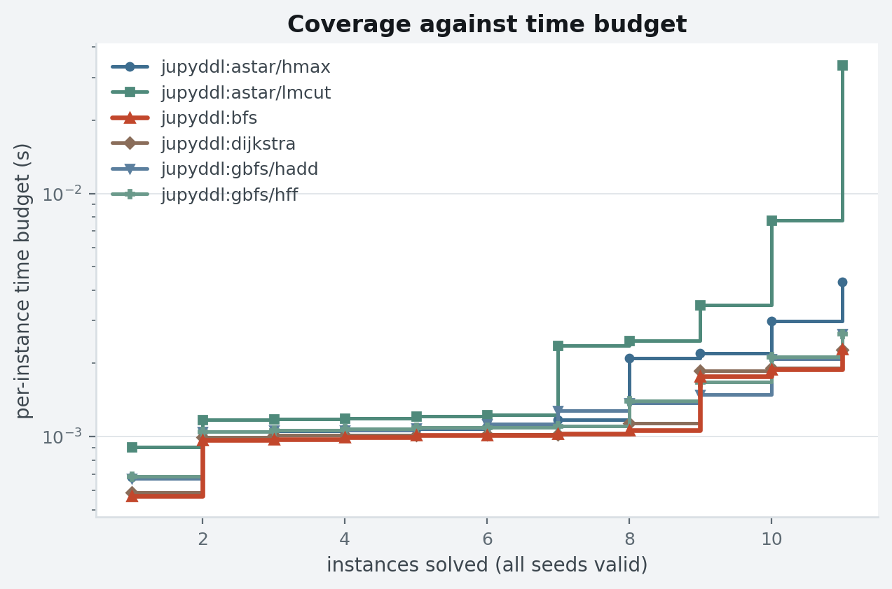
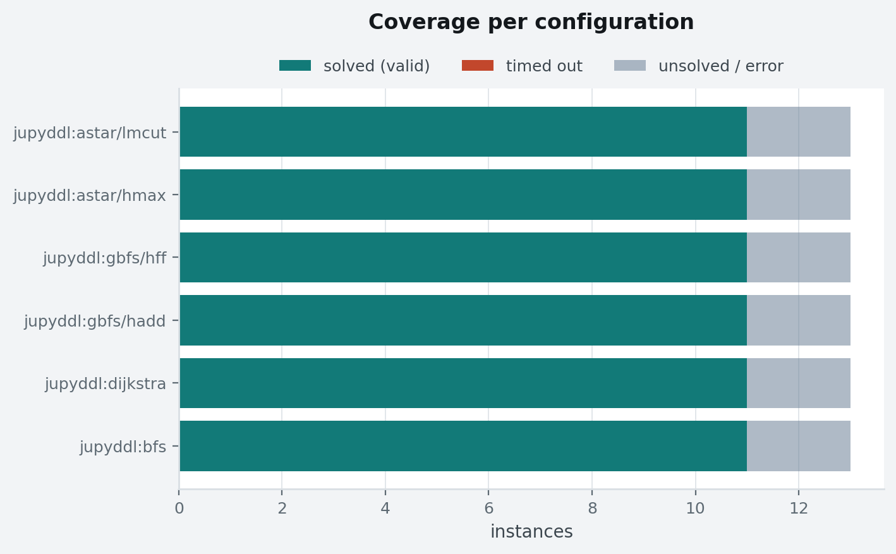
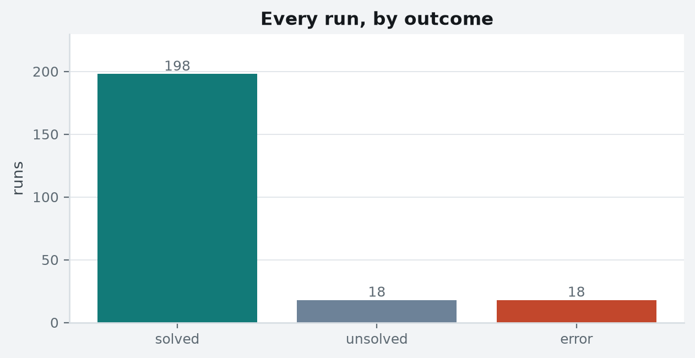
Every instance
| Instance | Configuration | Outcome | Median time | Min | Max | Cost | Length | Makespan | Expanded | Samples seeds x reps | Note |
|---|---|---|---|---|---|---|---|---|---|---|---|
| blocksworld/problem | jupyddl:astar/hmax | solved | 682 µs | 662 µs | 685 µs | 2 | 2 | — | 2 | 3/3 | |
| dinner/problem | jupyddl:astar/hmax | solved | 2.1 ms | 2.1 ms | 2.1 ms | 1 | 1 | — | 1 | 3/3 | |
| flip/problem | jupyddl:astar/hmax | solved | 2.2 ms | 2.1 ms | 2.3 ms | 3 | 3 | — | 22 | 3/3 | |
| grid/problem | jupyddl:astar/hmax | error | — | — | — | — | — | — | — | 0/3 | jupyddl.parser.ast.UnsupportedFeatureError: nested/numeric term in atom is not supported: ['wall', 'xpos', ['+', 'ypos', '1']] |
| miconic/s1-0 | jupyddl:astar/hmax | solved | 1.1 ms | 1.0 ms | 1.1 ms | 4 | 4 | — | 4 | 3/3 | |
| miconic/s1-1 | jupyddl:astar/hmax | solved | 1.1 ms | 1.1 ms | 1.1 ms | 3 | 3 | — | 3 | 3/3 | |
| miconic/s1-2 | jupyddl:astar/hmax | solved | 1.1 ms | 1.1 ms | 1.1 ms | 4 | 4 | — | 4 | 3/3 | |
| miconic/s1-3 | jupyddl:astar/hmax | solved | 1.1 ms | 1.0 ms | 1.1 ms | 4 | 4 | — | 4 | 3/3 | |
| miconic/s1-4 | jupyddl:astar/hmax | solved | 1.0 ms | 1.0 ms | 1.1 ms | 4 | 4 | — | 4 | 3/3 | |
| pallet/problem | jupyddl:astar/hmax | solved | 4.3 ms | 4.3 ms | 4.4 ms | 12 | 12 | — | 127 | 3/3 | |
| switch/problem | jupyddl:astar/hmax | solved | 3.0 ms | 2.7 ms | 3.3 ms | 3 | 3 | — | 5 | 3/3 | |
| tsp/problem | jupyddl:astar/hmax | solved | 1.2 ms | 1.1 ms | 1.3 ms | 15 | 5 | — | 12 | 3/3 | |
| vehicle/problem | jupyddl:astar/hmax | unsolved | — | — | — | — | — | — | — | 0/3 | search space exhausted without finding a plan |
| blocksworld/problem | jupyddl:astar/lmcut | solved | 904 µs | 894 µs | 928 µs | 2 | 2 | — | 2 | 3/3 | |
| dinner/problem | jupyddl:astar/lmcut | solved | 2.4 ms | 2.3 ms | 2.4 ms | 1 | 1 | — | 1 | 3/3 | |
| flip/problem | jupyddl:astar/lmcut | solved | 7.7 ms | 7.6 ms | 7.8 ms | 3 | 3 | — | 6 | 3/3 | |
| grid/problem | jupyddl:astar/lmcut | error | — | — | — | — | — | — | — | 0/3 | jupyddl.parser.ast.UnsupportedFeatureError: nested/numeric term in atom is not supported: ['wall', 'xpos', ['+', 'ypos', '1']] |
| miconic/s1-0 | jupyddl:astar/lmcut | solved | 1.2 ms | 1.2 ms | 1.2 ms | 4 | 4 | — | 4 | 3/3 | |
| miconic/s1-1 | jupyddl:astar/lmcut | solved | 1.2 ms | 1.2 ms | 1.3 ms | 3 | 3 | — | 3 | 3/3 | |
| miconic/s1-2 | jupyddl:astar/lmcut | solved | 1.2 ms | 1.1 ms | 1.2 ms | 4 | 4 | — | 4 | 3/3 | |
| miconic/s1-3 | jupyddl:astar/lmcut | solved | 1.2 ms | 1.2 ms | 1.3 ms | 4 | 4 | — | 4 | 3/3 | |
| miconic/s1-4 | jupyddl:astar/lmcut | solved | 1.2 ms | 1.2 ms | 1.2 ms | 4 | 4 | — | 4 | 3/3 | |
| pallet/problem | jupyddl:astar/lmcut | solved | 33.8 ms | 33.0 ms | 34.3 ms | 12 | 12 | — | 126 | 3/3 | |
| switch/problem | jupyddl:astar/lmcut | solved | 3.5 ms | 3.4 ms | 3.6 ms | 3 | 3 | — | 5 | 3/3 | |
| tsp/problem | jupyddl:astar/lmcut | solved | 2.5 ms | 2.1 ms | 2.8 ms | 15 | 5 | — | 12 | 3/3 | |
| vehicle/problem | jupyddl:astar/lmcut | unsolved | — | — | — | — | — | — | — | 0/3 | search space exhausted without finding a plan |
| blocksworld/problem | jupyddl:bfs | solved | 571 µs | 565 µs | 583 µs | 2 | 2 | — | 2 | 3/3 | |
| dinner/problem | jupyddl:bfs | solved | 1.9 ms | 1.9 ms | 2.0 ms | 1 | 1 | — | 1 | 3/3 | |
| flip/problem | jupyddl:bfs | solved | 964 µs | 882 µs | 999 µs | 3 | 3 | — | 9 | 3/3 | |
| grid/problem | jupyddl:bfs | error | — | — | — | — | — | — | — | 0/3 | jupyddl.parser.ast.UnsupportedFeatureError: nested/numeric term in atom is not supported: ['wall', 'xpos', ['+', 'ypos', '1']] |
| miconic/s1-0 | jupyddl:bfs | solved | 997 µs | 994 µs | 1.0 ms | 4 | 4 | — | 4 | 3/3 | |
| miconic/s1-1 | jupyddl:bfs | solved | 1.0 ms | 990 µs | 1.0 ms | 3 | 3 | — | 4 | 3/3 | |
| miconic/s1-2 | jupyddl:bfs | solved | 1.0 ms | 1.0 ms | 1.0 ms | 4 | 4 | — | 4 | 3/3 | |
| miconic/s1-3 | jupyddl:bfs | solved | 1.1 ms | 1.0 ms | 1.1 ms | 4 | 4 | — | 4 | 3/3 | |
| miconic/s1-4 | jupyddl:bfs | solved | 1.0 ms | 985 µs | 1.0 ms | 4 | 4 | — | 4 | 3/3 | |
| pallet/problem | jupyddl:bfs | solved | 1.8 ms | 1.8 ms | 1.9 ms | 12 | 12 | — | 124 | 3/3 | |
| switch/problem | jupyddl:bfs | solved | 2.3 ms | 2.2 ms | 2.3 ms | 3 | 3 | — | 4 | 3/3 | |
| tsp/problem | jupyddl:bfs | solved | 973 µs | 936 µs | 976 µs | 15 | 5 | — | 18 | 3/3 | |
| vehicle/problem | jupyddl:bfs | unsolved | — | — | — | — | — | — | — | 0/3 | search space exhausted without finding a plan |
| blocksworld/problem | jupyddl:dijkstra | solved | 590 µs | 580 µs | 594 µs | 2 | 2 | — | 4 | 3/3 | |
| dinner/problem | jupyddl:dijkstra | solved | 1.9 ms | 1.9 ms | 1.9 ms | 1 | 1 | — | 2 | 3/3 | |
| flip/problem | jupyddl:dijkstra | solved | 1.1 ms | 1.1 ms | 1.2 ms | 3 | 3 | — | 27 | 3/3 | |
| grid/problem | jupyddl:dijkstra | error | — | — | — | — | — | — | — | 0/3 | jupyddl.parser.ast.UnsupportedFeatureError: nested/numeric term in atom is not supported: ['wall', 'xpos', ['+', 'ypos', '1']] |
| miconic/s1-0 | jupyddl:dijkstra | solved | 1.0 ms | 996 µs | 1.1 ms | 4 | 4 | — | 4 | 3/3 | |
| miconic/s1-1 | jupyddl:dijkstra | solved | 995 µs | 966 µs | 1.0 ms | 3 | 3 | — | 4 | 3/3 | |
| miconic/s1-2 | jupyddl:dijkstra | solved | 1.0 ms | 996 µs | 1.0 ms | 4 | 4 | — | 4 | 3/3 | |
| miconic/s1-3 | jupyddl:dijkstra | solved | 1.0 ms | 986 µs | 1.0 ms | 4 | 4 | — | 4 | 3/3 | |
| miconic/s1-4 | jupyddl:dijkstra | solved | 1.0 ms | 997 µs | 1.1 ms | 4 | 4 | — | 4 | 3/3 | |
| pallet/problem | jupyddl:dijkstra | solved | 1.9 ms | 1.9 ms | 1.9 ms | 12 | 12 | — | 127 | 3/3 | |
| switch/problem | jupyddl:dijkstra | solved | 2.3 ms | 2.2 ms | 2.3 ms | 3 | 3 | — | 5 | 3/3 | |
| tsp/problem | jupyddl:dijkstra | solved | 1.0 ms | 985 µs | 1.3 ms | 15 | 5 | — | 24 | 3/3 | |
| vehicle/problem | jupyddl:dijkstra | unsolved | — | — | — | — | — | — | — | 0/3 | search space exhausted without finding a plan |
| blocksworld/problem | jupyddl:gbfs/hadd | solved | 670 µs | 670 µs | 675 µs | 2 | 2 | — | 2 | 3/3 | |
| dinner/problem | jupyddl:gbfs/hadd | solved | 2.1 ms | 2.1 ms | 2.1 ms | 1 | 1 | — | 1 | 3/3 | |
| flip/problem | jupyddl:gbfs/hadd | solved | 1.4 ms | 1.3 ms | 1.4 ms | 3 | 3 | — | 3 | 3/3 | |
| grid/problem | jupyddl:gbfs/hadd | error | — | — | — | — | — | — | — | 0/3 | jupyddl.parser.ast.UnsupportedFeatureError: nested/numeric term in atom is not supported: ['wall', 'xpos', ['+', 'ypos', '1']] |
| miconic/s1-0 | jupyddl:gbfs/hadd | solved | 1.1 ms | 1.0 ms | 1.1 ms | 4 | 4 | — | 4 | 3/3 | |
| miconic/s1-1 | jupyddl:gbfs/hadd | solved | 1.1 ms | 1.0 ms | 1.1 ms | 3 | 3 | — | 3 | 3/3 | |
| miconic/s1-2 | jupyddl:gbfs/hadd | solved | 1.1 ms | 1.1 ms | 1.2 ms | 4 | 4 | — | 4 | 3/3 | |
| miconic/s1-3 | jupyddl:gbfs/hadd | solved | 1.1 ms | 1.1 ms | 1.1 ms | 4 | 4 | — | 4 | 3/3 | |
| miconic/s1-4 | jupyddl:gbfs/hadd | solved | 1.0 ms | 1.0 ms | 1.1 ms | 4 | 4 | — | 4 | 3/3 | |
| pallet/problem | jupyddl:gbfs/hadd | solved | 1.5 ms | 1.4 ms | 1.5 ms | 12 | 12 | — | 12 | 3/3 | |
| switch/problem | jupyddl:gbfs/hadd | solved | 2.6 ms | 2.5 ms | 2.6 ms | 3 | 3 | — | 3 | 3/3 | |
| tsp/problem | jupyddl:gbfs/hadd | solved | 1.3 ms | 1.2 ms | 1.8 ms | 15 | 5 | — | 9 | 3/3 | |
| vehicle/problem | jupyddl:gbfs/hadd | unsolved | — | — | — | — | — | — | — | 0/3 | search space exhausted without finding a plan |
| blocksworld/problem | jupyddl:gbfs/hff | solved | 683 µs | 679 µs | 706 µs | 2 | 2 | — | 2 | 3/3 | |
| dinner/problem | jupyddl:gbfs/hff | solved | 2.1 ms | 2.1 ms | 2.2 ms | 1 | 1 | — | 1 | 3/3 | |
| flip/problem | jupyddl:gbfs/hff | solved | 1.4 ms | 1.4 ms | 1.4 ms | 3 | 3 | — | 3 | 3/3 | |
| grid/problem | jupyddl:gbfs/hff | error | — | — | — | — | — | — | — | 0/3 | jupyddl.parser.ast.UnsupportedFeatureError: nested/numeric term in atom is not supported: ['wall', 'xpos', ['+', 'ypos', '1']] |
| miconic/s1-0 | jupyddl:gbfs/hff | solved | 1.1 ms | 1.1 ms | 1.1 ms | 4 | 4 | — | 4 | 3/3 | |
| miconic/s1-1 | jupyddl:gbfs/hff | solved | 1.1 ms | 1.1 ms | 1.1 ms | 3 | 3 | — | 3 | 3/3 | |
| miconic/s1-2 | jupyddl:gbfs/hff | solved | 1.1 ms | 1.0 ms | 1.1 ms | 4 | 4 | — | 4 | 3/3 | |
| miconic/s1-3 | jupyddl:gbfs/hff | solved | 1.1 ms | 1.1 ms | 1.1 ms | 4 | 4 | — | 4 | 3/3 | |
| miconic/s1-4 | jupyddl:gbfs/hff | solved | 1.1 ms | 1.1 ms | 1.1 ms | 4 | 4 | — | 4 | 3/3 | |
| pallet/problem | jupyddl:gbfs/hff | solved | 1.7 ms | 1.6 ms | 1.7 ms | 12 | 12 | — | 12 | 3/3 | |
| switch/problem | jupyddl:gbfs/hff | solved | 2.7 ms | 2.6 ms | 2.7 ms | 3 | 3 | — | 3 | 3/3 | |
| tsp/problem | jupyddl:gbfs/hff | solved | 1.0 ms | 1.0 ms | 1.1 ms | 15 | 5 | — | 5 | 3/3 | |
| vehicle/problem | jupyddl:gbfs/hff | unsolved | — | — | — | — | — | — | — | 0/3 | search space exhausted without finding a plan |
MAPF — obstacle density
Sixteen agents on 20x20 grids, obstacle density from 5% to 30%, five seeds. Same solvers as the scaling suite. The generator guarantees every start and goal lies in one connected region, so a failure here is a solver failure and never an unreachable goal.
Leaderboard
| Configuration | Family | Coverage | Solved | Instances | Timeouts | Errors | Unsolved | Median time solved only | Total time solved only | Expanded |
|---|---|---|---|---|---|---|---|---|---|---|
| pymapf:pibt | mapf | 100% | 6 | 6 | 0 | 0 | 0 | 13.7 ms | 84.6 ms | 874 |
| pymapf:lacam | mapf | 100% | 6 | 6 | 0 | 0 | 0 | 14.6 ms | 88.4 ms | 875 |
| pymapf:wcbs | mapf | 83% | 5 | 6 | 1 | 0 | 0 | 57.0 ms | 353.9 ms | 863 |
| pymapf:prioritized | mapf | 67% | 4 | 6 | 0 | 0 | 2 | 23.1 ms | 92.9 ms | 416 |
| pymapf:cbs | mapf | 17% | 1 | 6 | 5 | 0 | 0 | 68.6 ms | 68.6 ms | 7,616 |
Both timing columns are computed over the instances a configuration actually solved, so each row has a different denominator and the columns are not comparable across rows. A configuration that solves only the easy instances will post the fastest time on this table. Read them alongside coverage, never instead of it.
Figures
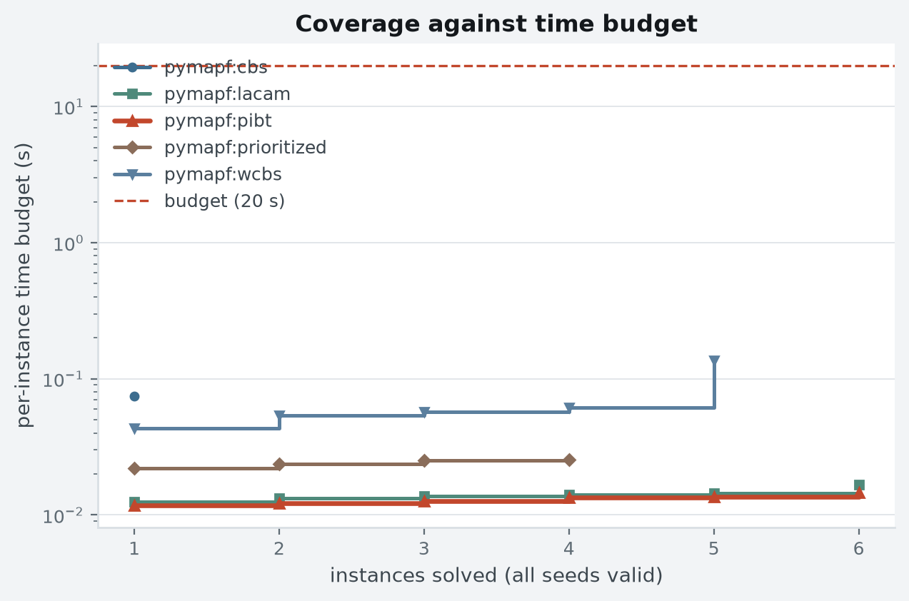
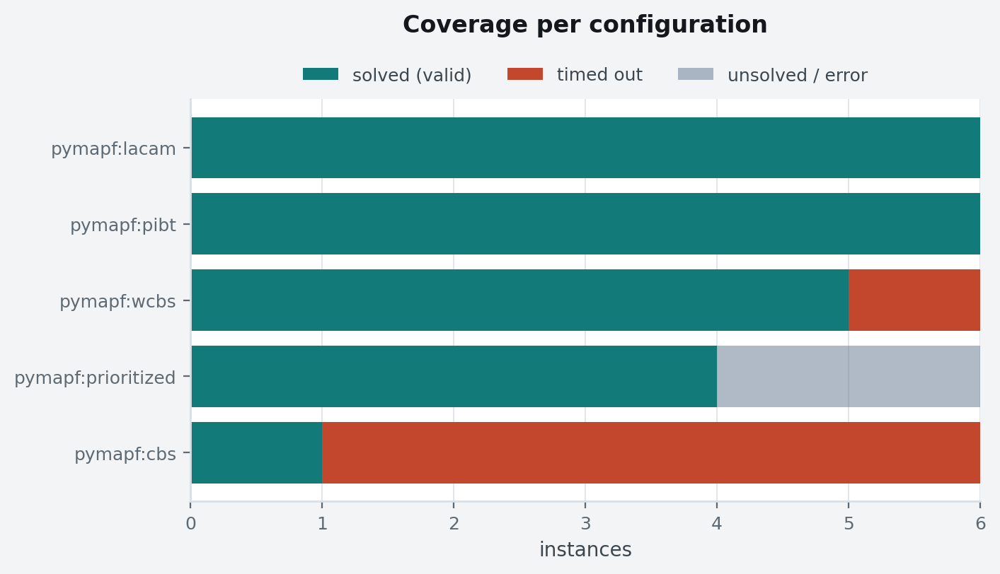
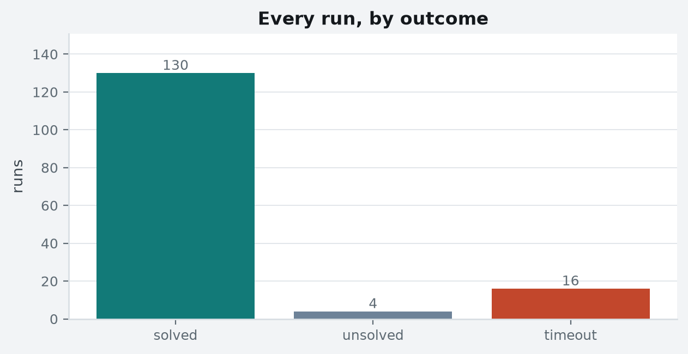
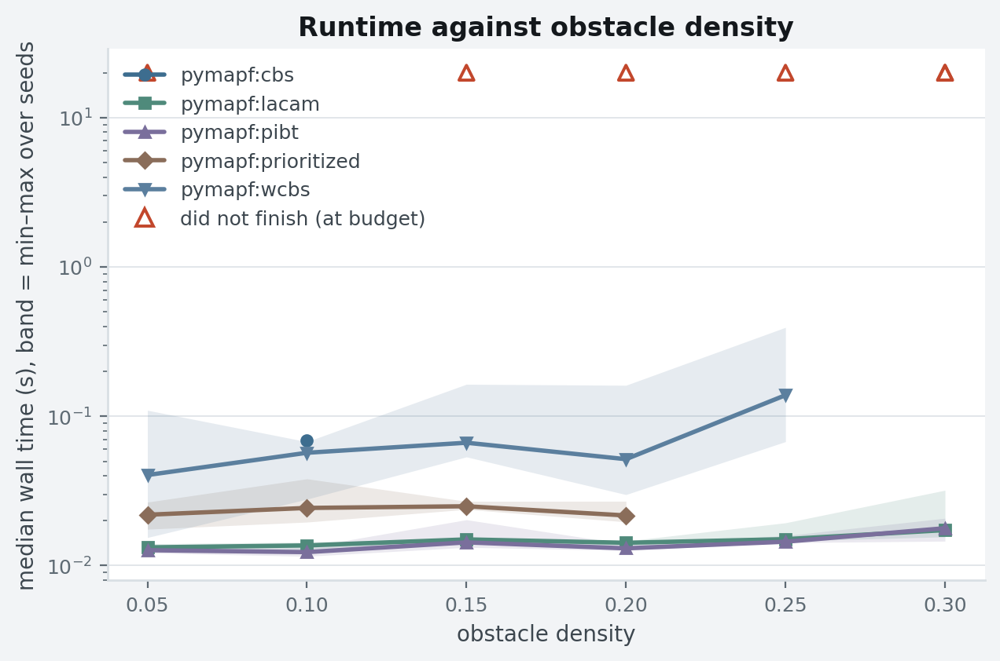
Every instance
| Instance | Configuration | Outcome | Median time | Min | Max | Cost | Length | Makespan | Expanded | Samples seeds x reps | Note |
|---|---|---|---|---|---|---|---|---|---|---|---|
| random_obstacles/20x20/n16/d0.05 | pymapf:cbs | partial (timeout) | 64.9 ms | 14.2 ms | 8.01 s | 182 | — | 23 | 14 | 3/5 | time limit (20s) reached after 3047 nodes |
| random_obstacles/20x20/n16/d0.1 | pymapf:cbs | solved | 68.6 ms | 29.2 ms | 107.6 ms | 216 | — | 28 | 15 | 5/5 | |
| random_obstacles/20x20/n16/d0.15 | pymapf:cbs | partial (timeout) | 172.2 ms | 87.3 ms | 19.31 s | 212 | — | 22 | 46 | 3/5 | time limit (20s) reached after 5509 nodes |
| random_obstacles/20x20/n16/d0.2 | pymapf:cbs | partial (timeout) | 84.6 ms | 50.0 ms | 119.2 ms | 230.5 | — | 22.5 | 26 | 2/5 | time limit (20s) reached after 4370 nodes |
| random_obstacles/20x20/n16/d0.25 | pymapf:cbs | partial (timeout) | 3.39 s | 3.39 s | 3.39 s | 214 | — | 26 | 712 | 1/5 | time limit (20s) reached after 4101 nodes |
| random_obstacles/20x20/n16/d0.3 | pymapf:cbs | partial (timeout) | 101.8 ms | 101.8 ms | 101.8 ms | 193 | — | 23 | 30 | 1/5 | time limit (20s) reached after 4786 nodes |
| random_obstacles/20x20/n16/d0.05 | pymapf:lacam | solved | 13.2 ms | 12.9 ms | 14.0 ms | 240 | — | 24 | 24 | 5/5 | |
| random_obstacles/20x20/n16/d0.1 | pymapf:lacam | solved | 13.6 ms | 12.6 ms | 14.4 ms | 246 | — | 28 | 28 | 5/5 | |
| random_obstacles/20x20/n16/d0.15 | pymapf:lacam | solved | 15.0 ms | 14.7 ms | 15.2 ms | 242 | — | 26 | 26 | 5/5 | |
| random_obstacles/20x20/n16/d0.2 | pymapf:lacam | solved | 14.2 ms | 13.6 ms | 14.6 ms | 237 | — | 29 | 29 | 5/5 | |
| random_obstacles/20x20/n16/d0.25 | pymapf:lacam | solved | 15.0 ms | 14.6 ms | 19.3 ms | 283 | — | 32 | 32 | 5/5 | |
| random_obstacles/20x20/n16/d0.3 | pymapf:lacam | solved | 17.3 ms | 15.6 ms | 32.0 ms | 327 | — | 33 | 33 | 5/5 | |
| random_obstacles/20x20/n16/d0.05 | pymapf:pibt | solved | 12.7 ms | 12.2 ms | 13.2 ms | 240 | — | 24 | 24 | 5/5 | |
| random_obstacles/20x20/n16/d0.1 | pymapf:pibt | solved | 12.3 ms | 11.5 ms | 13.3 ms | 246 | — | 28 | 28 | 5/5 | |
| random_obstacles/20x20/n16/d0.15 | pymapf:pibt | solved | 14.3 ms | 13.2 ms | 20.3 ms | 242 | — | 26 | 26 | 5/5 | |
| random_obstacles/20x20/n16/d0.2 | pymapf:pibt | solved | 13.0 ms | 12.6 ms | 13.9 ms | 237 | — | 29 | 29 | 5/5 | |
| random_obstacles/20x20/n16/d0.25 | pymapf:pibt | solved | 14.5 ms | 14.2 ms | 15.9 ms | 283 | — | 32 | 32 | 5/5 | |
| random_obstacles/20x20/n16/d0.3 | pymapf:pibt | solved | 17.8 ms | 14.6 ms | 20.7 ms | 327 | — | 33 | 33 | 5/5 | |
| random_obstacles/20x20/n16/d0.05 | pymapf:prioritized | solved | 21.9 ms | 17.5 ms | 26.6 ms | 214 | — | 24 | 16 | 5/5 | |
| random_obstacles/20x20/n16/d0.1 | pymapf:prioritized | solved | 24.3 ms | 19.6 ms | 38.1 ms | 231 | — | 28 | 16 | 5/5 | |
| random_obstacles/20x20/n16/d0.15 | pymapf:prioritized | solved | 25.0 ms | 23.8 ms | 26.9 ms | 220 | — | 25 | 16 | 5/5 | |
| random_obstacles/20x20/n16/d0.2 | pymapf:prioritized | solved | 21.7 ms | 19.6 ms | 27.0 ms | 212 | — | 25 | 16 | 5/5 | |
| random_obstacles/20x20/n16/d0.25 | pymapf:prioritized | partial (unsolved) | 38.5 ms | 30.9 ms | 91.9 ms | 241 | — | 26 | 16 | 3/5 | agent 'a14' has no path under the reservations of the 14 higher-priority agents |
| random_obstacles/20x20/n16/d0.3 | pymapf:prioritized | partial (unsolved) | 37.6 ms | 27.9 ms | 62.3 ms | 242 | — | 24 | 16 | 3/5 | agent 'a9' has no path under the reservations of the 9 higher-priority agents |
| random_obstacles/20x20/n16/d0.05 | pymapf:wcbs | solved | 40.4 ms | 15.4 ms | 109.7 ms | 220 | — | 24 | 10 | 5/5 | |
| random_obstacles/20x20/n16/d0.1 | pymapf:wcbs | solved | 57.0 ms | 27.8 ms | 67.6 ms | 216 | — | 28 | 9 | 5/5 | |
| random_obstacles/20x20/n16/d0.15 | pymapf:wcbs | solved | 66.5 ms | 53.4 ms | 163.9 ms | 215 | — | 24 | 16 | 5/5 | |
| random_obstacles/20x20/n16/d0.2 | pymapf:wcbs | solved | 51.6 ms | 29.9 ms | 161.3 ms | 226 | — | 25 | 13 | 5/5 | |
| random_obstacles/20x20/n16/d0.25 | pymapf:wcbs | solved | 138.4 ms | 67.6 ms | 393.9 ms | 242 | — | 29 | 26 | 5/5 | |
| random_obstacles/20x20/n16/d0.3 | pymapf:wcbs | partial (timeout) | 844.5 ms | 36.0 ms | 7.60 s | 258 | — | 29 | 65.5 | 4/5 | time limit (20s) reached after 1177 nodes |
MAPF — scaling with agent count
Random-obstacle grids at 15% density, from 4 to 32 agents, over five seeds. Five pymapf solvers and both cuplan CPU solvers on the same generated instances. CBS and weighted CBS are optimal and bounded-suboptimal respectively, on sum of costs. LaCAM (Okumura, 2023) is complete but not optimal; PIBT (Okumura et al., 2022) is neither; prioritized planning is neither. Completeness is a statement about eventual termination, not about finishing inside this suite's 20-second budget. Expect the optimal solvers to fall off first — that is the result, not a failure of the run.
Leaderboard
| Configuration | Family | Coverage | Solved | Instances | Timeouts | Errors | Unsolved | Median time solved only | Total time solved only | Expanded |
|---|---|---|---|---|---|---|---|---|---|---|
| pymapf:lacam | mapf | 100% | 10 | 10 | 0 | 0 | 0 | 12.8 ms | 153.7 ms | 1,251 |
| pymapf:wcbs | mapf | 100% | 10 | 10 | 0 | 0 | 0 | 51.6 ms | 2.19 s | 2,052 |
| pymapf:pibt | mapf | 90% | 9 | 10 | 0 | 0 | 1 | 10.4 ms | 125.8 ms | 1,199 |
| pymapf:prioritized | mapf | 80% | 8 | 10 | 0 | 0 | 2 | 11.0 ms | 343.5 ms | 720 |
| pymapf:cbs | mapf | 50% | 5 | 10 | 5 | 0 | 0 | 4.0 ms | 95.8 ms | 4,012 |
| cuplan:pibt@cpu | mapf | not run | — | — | — | — | — | — | — | — |
| cuplan:pibt@cuda | mapf | not run | — | — | — | — | — | — | — | — |
| cuplan:prioritized@cpu | mapf | not run | — | — | — | — | — | — | — | — |
Both timing columns are computed over the instances a configuration actually solved, so each row has a different denominator and the columns are not comparable across rows. A configuration that solves only the easy instances will post the fastest time on this table. Read them alongside coverage, never instead of it.
Figures
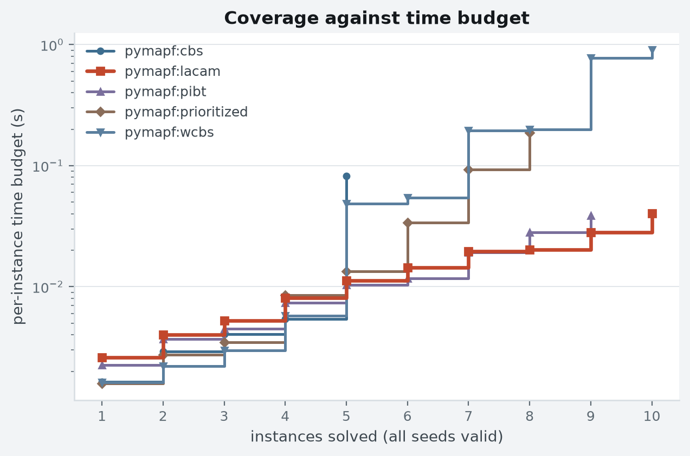
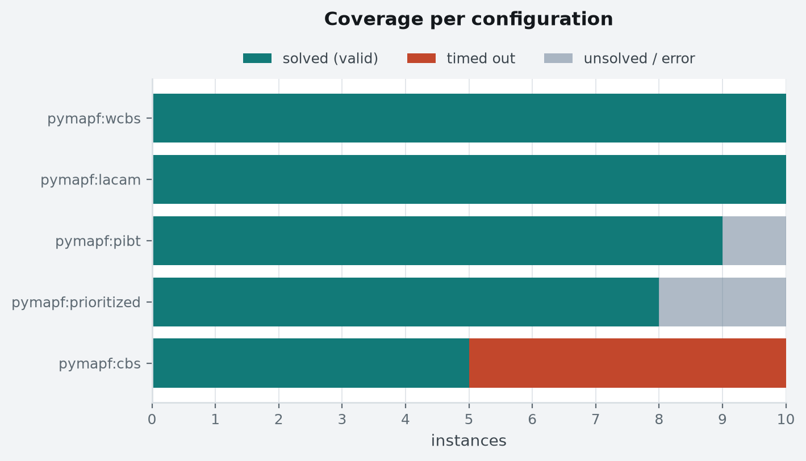
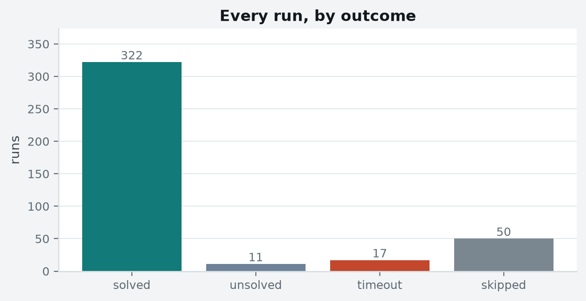
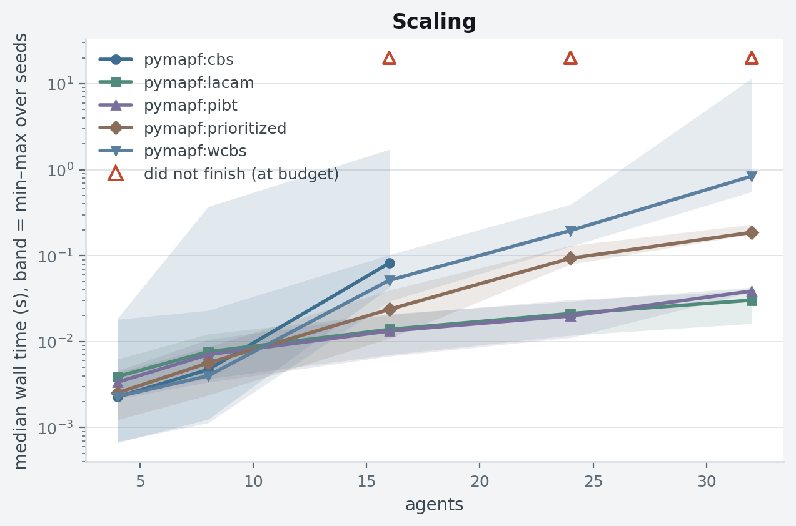
Every instance
| Instance | Configuration | Outcome | Median time | Min | Max | Cost | Length | Makespan | Expanded | Samples seeds x reps | Note |
|---|---|---|---|---|---|---|---|---|---|---|---|
| random_obstacles/16x16/n16/d0.15 | cuplan:pibt@cpu | not-installed | — | — | — | — | — | — | — | 0/5 | cuplan is not importable (ModuleNotFoundError: No module named 'cuplan'). Install with: pip install 'cuda-planning @ … |
| random_obstacles/16x16/n24/d0.15 | cuplan:pibt@cpu | not-installed | — | — | — | — | — | — | — | 0/5 | cuplan is not importable (ModuleNotFoundError: No module named 'cuplan'). Install with: pip install 'cuda-planning @ … |
| random_obstacles/16x16/n32/d0.15 | cuplan:pibt@cpu | not-installed | — | — | — | — | — | — | — | 0/5 | cuplan is not importable (ModuleNotFoundError: No module named 'cuplan'). Install with: pip install 'cuda-planning @ … |
| random_obstacles/16x16/n4/d0.15 | cuplan:pibt@cpu | not-installed | — | — | — | — | — | — | — | 0/5 | cuplan is not importable (ModuleNotFoundError: No module named 'cuplan'). Install with: pip install 'cuda-planning @ … |
| random_obstacles/16x16/n8/d0.15 | cuplan:pibt@cpu | not-installed | — | — | — | — | — | — | — | 0/5 | cuplan is not importable (ModuleNotFoundError: No module named 'cuplan'). Install with: pip install 'cuda-planning @ … |
| random_obstacles/24x24/n16/d0.15 | cuplan:pibt@cpu | not-installed | — | — | — | — | — | — | — | 0/5 | cuplan is not importable (ModuleNotFoundError: No module named 'cuplan'). Install with: pip install 'cuda-planning @ … |
| random_obstacles/24x24/n24/d0.15 | cuplan:pibt@cpu | not-installed | — | — | — | — | — | — | — | 0/5 | cuplan is not importable (ModuleNotFoundError: No module named 'cuplan'). Install with: pip install 'cuda-planning @ … |
| random_obstacles/24x24/n32/d0.15 | cuplan:pibt@cpu | not-installed | — | — | — | — | — | — | — | 0/5 | cuplan is not importable (ModuleNotFoundError: No module named 'cuplan'). Install with: pip install 'cuda-planning @ … |
| random_obstacles/24x24/n4/d0.15 | cuplan:pibt@cpu | not-installed | — | — | — | — | — | — | — | 0/5 | cuplan is not importable (ModuleNotFoundError: No module named 'cuplan'). Install with: pip install 'cuda-planning @ … |
| random_obstacles/24x24/n8/d0.15 | cuplan:pibt@cpu | not-installed | — | — | — | — | — | — | — | 0/5 | cuplan is not importable (ModuleNotFoundError: No module named 'cuplan'). Install with: pip install 'cuda-planning @ … |
| random_obstacles/16x16/n16/d0.15 | cuplan:pibt@cuda | not-installed | — | — | — | — | — | — | — | 0/5 | cuplan is not importable (ModuleNotFoundError: No module named 'cuplan'). Install with: pip install 'cuda-planning @ … |
| random_obstacles/16x16/n24/d0.15 | cuplan:pibt@cuda | not-installed | — | — | — | — | — | — | — | 0/5 | cuplan is not importable (ModuleNotFoundError: No module named 'cuplan'). Install with: pip install 'cuda-planning @ … |
| random_obstacles/16x16/n32/d0.15 | cuplan:pibt@cuda | not-installed | — | — | — | — | — | — | — | 0/5 | cuplan is not importable (ModuleNotFoundError: No module named 'cuplan'). Install with: pip install 'cuda-planning @ … |
| random_obstacles/16x16/n4/d0.15 | cuplan:pibt@cuda | not-installed | — | — | — | — | — | — | — | 0/5 | cuplan is not importable (ModuleNotFoundError: No module named 'cuplan'). Install with: pip install 'cuda-planning @ … |
| random_obstacles/16x16/n8/d0.15 | cuplan:pibt@cuda | not-installed | — | — | — | — | — | — | — | 0/5 | cuplan is not importable (ModuleNotFoundError: No module named 'cuplan'). Install with: pip install 'cuda-planning @ … |
| random_obstacles/24x24/n16/d0.15 | cuplan:pibt@cuda | not-installed | — | — | — | — | — | — | — | 0/5 | cuplan is not importable (ModuleNotFoundError: No module named 'cuplan'). Install with: pip install 'cuda-planning @ … |
| random_obstacles/24x24/n24/d0.15 | cuplan:pibt@cuda | not-installed | — | — | — | — | — | — | — | 0/5 | cuplan is not importable (ModuleNotFoundError: No module named 'cuplan'). Install with: pip install 'cuda-planning @ … |
| random_obstacles/24x24/n32/d0.15 | cuplan:pibt@cuda | not-installed | — | — | — | — | — | — | — | 0/5 | cuplan is not importable (ModuleNotFoundError: No module named 'cuplan'). Install with: pip install 'cuda-planning @ … |
| random_obstacles/24x24/n4/d0.15 | cuplan:pibt@cuda | not-installed | — | — | — | — | — | — | — | 0/5 | cuplan is not importable (ModuleNotFoundError: No module named 'cuplan'). Install with: pip install 'cuda-planning @ … |
| random_obstacles/24x24/n8/d0.15 | cuplan:pibt@cuda | not-installed | — | — | — | — | — | — | — | 0/5 | cuplan is not importable (ModuleNotFoundError: No module named 'cuplan'). Install with: pip install 'cuda-planning @ … |
| random_obstacles/16x16/n16/d0.15 | cuplan:prioritized@cpu | not-installed | — | — | — | — | — | — | — | 0/5 | cuplan is not importable (ModuleNotFoundError: No module named 'cuplan'). Install with: pip install 'cuda-planning @ … |
| random_obstacles/16x16/n24/d0.15 | cuplan:prioritized@cpu | not-installed | — | — | — | — | — | — | — | 0/5 | cuplan is not importable (ModuleNotFoundError: No module named 'cuplan'). Install with: pip install 'cuda-planning @ … |
| random_obstacles/16x16/n32/d0.15 | cuplan:prioritized@cpu | not-installed | — | — | — | — | — | — | — | 0/5 | cuplan is not importable (ModuleNotFoundError: No module named 'cuplan'). Install with: pip install 'cuda-planning @ … |
| random_obstacles/16x16/n4/d0.15 | cuplan:prioritized@cpu | not-installed | — | — | — | — | — | — | — | 0/5 | cuplan is not importable (ModuleNotFoundError: No module named 'cuplan'). Install with: pip install 'cuda-planning @ … |
| random_obstacles/16x16/n8/d0.15 | cuplan:prioritized@cpu | not-installed | — | — | — | — | — | — | — | 0/5 | cuplan is not importable (ModuleNotFoundError: No module named 'cuplan'). Install with: pip install 'cuda-planning @ … |
| random_obstacles/24x24/n16/d0.15 | cuplan:prioritized@cpu | not-installed | — | — | — | — | — | — | — | 0/5 | cuplan is not importable (ModuleNotFoundError: No module named 'cuplan'). Install with: pip install 'cuda-planning @ … |
| random_obstacles/24x24/n24/d0.15 | cuplan:prioritized@cpu | not-installed | — | — | — | — | — | — | — | 0/5 | cuplan is not importable (ModuleNotFoundError: No module named 'cuplan'). Install with: pip install 'cuda-planning @ … |
| random_obstacles/24x24/n32/d0.15 | cuplan:prioritized@cpu | not-installed | — | — | — | — | — | — | — | 0/5 | cuplan is not importable (ModuleNotFoundError: No module named 'cuplan'). Install with: pip install 'cuda-planning @ … |
| random_obstacles/24x24/n4/d0.15 | cuplan:prioritized@cpu | not-installed | — | — | — | — | — | — | — | 0/5 | cuplan is not importable (ModuleNotFoundError: No module named 'cuplan'). Install with: pip install 'cuda-planning @ … |
| random_obstacles/24x24/n8/d0.15 | cuplan:prioritized@cpu | not-installed | — | — | — | — | — | — | — | 0/5 | cuplan is not importable (ModuleNotFoundError: No module named 'cuplan'). Install with: pip install 'cuda-planning @ … |
| random_obstacles/16x16/n16/d0.15 | pymapf:cbs | partial (timeout) | 403.5 ms | 130.5 ms | 2.66 s | 171.5 | — | 20 | 136.5 | 4/5 | time limit (20s) reached after 5983 nodes |
| random_obstacles/16x16/n24/d0.15 | pymapf:cbs | partial (timeout) | 8.89 s | 8.89 s | 8.89 s | 261 | — | 22 | 1,697 | 1/5 | time limit (20s) reached after 4626 nodes |
| random_obstacles/16x16/n32/d0.15 | pymapf:cbs | timeout | — | — | — | — | — | — | — | 0/5 | time limit (20s) reached after 2933 nodes |
| random_obstacles/16x16/n4/d0.15 | pymapf:cbs | solved | 1.6 ms | 876 µs | 1.8 ms | 42 | — | 15 | 1 | 5/5 | |
| random_obstacles/16x16/n8/d0.15 | pymapf:cbs | solved | 4.0 ms | 1.2 ms | 6.4 ms | 64 | — | 16 | 5 | 5/5 | |
| random_obstacles/24x24/n16/d0.15 | pymapf:cbs | solved | 81.8 ms | 42.3 ms | 1.72 s | 275 | — | 30 | 24 | 5/5 | |
| random_obstacles/24x24/n24/d0.15 | pymapf:cbs | partial (timeout) | 1.02 s | 430.9 ms | 1.61 s | 351 | — | 28 | 134 | 2/5 | time limit (20s) reached after 2441 nodes |
| random_obstacles/24x24/n32/d0.15 | pymapf:cbs | partial (timeout) | 3.52 s | 3.52 s | 3.52 s | 490 | — | 29 | 265 | 1/5 | time limit (20s) reached after 1592 nodes |
| random_obstacles/24x24/n4/d0.15 | pymapf:cbs | solved | 2.9 ms | 666 µs | 18.5 ms | 77 | — | 26 | 1 | 5/5 | |
| random_obstacles/24x24/n8/d0.15 | pymapf:cbs | solved | 5.4 ms | 3.1 ms | 371.3 ms | 128 | — | 25 | 3 | 5/5 | |
| random_obstacles/16x16/n16/d0.15 | pymapf:lacam | solved | 8.1 ms | 7.0 ms | 8.5 ms | 190 | — | 19 | 19 | 5/5 | |
| random_obstacles/16x16/n24/d0.15 | pymapf:lacam | solved | 14.3 ms | 11.8 ms | 15.1 ms | 335 | — | 23 | 23 | 5/5 | |
| random_obstacles/16x16/n32/d0.15 | pymapf:lacam | solved | 20.2 ms | 16.2 ms | 21.9 ms | 520 | — | 29 | 29 | 5/5 | |
| random_obstacles/16x16/n4/d0.15 | pymapf:lacam | solved | 2.6 ms | 2.4 ms | 2.9 ms | 44 | — | 16 | 16 | 5/5 | |
| random_obstacles/16x16/n8/d0.15 | pymapf:lacam | solved | 4.0 ms | 3.7 ms | 4.6 ms | 64 | — | 16 | 16 | 5/5 | |
| random_obstacles/24x24/n16/d0.15 | pymapf:lacam | solved | 19.6 ms | 19.3 ms | 20.9 ms | 286 | — | 32 | 32 | 5/5 | |
| random_obstacles/24x24/n24/d0.15 | pymapf:lacam | solved | 28.0 ms | 26.8 ms | 29.3 ms | 405 | — | 31 | 31 | 5/5 | |
| random_obstacles/24x24/n32/d0.15 | pymapf:lacam | solved | 40.5 ms | 40.1 ms | 42.7 ms | 590 | — | 31 | 31 | 5/5 | |
| random_obstacles/24x24/n4/d0.15 | pymapf:lacam | solved | 5.2 ms | 4.7 ms | 6.2 ms | 86 | — | 24 | 24 | 5/5 | |
| random_obstacles/24x24/n8/d0.15 | pymapf:lacam | solved | 11.2 ms | 11.2 ms | 12.2 ms | 128 | — | 27 | 27 | 5/5 | |
| random_obstacles/16x16/n16/d0.15 | pymapf:pibt | solved | 7.3 ms | 6.8 ms | 8.0 ms | 190 | — | 19 | 19 | 5/5 | |
| random_obstacles/16x16/n24/d0.15 | pymapf:pibt | solved | 11.7 ms | 11.1 ms | 12.4 ms | 335 | — | 23 | 23 | 5/5 | |
| random_obstacles/16x16/n32/d0.15 | pymapf:pibt | partial (unsolved) | 16.2 ms | 15.0 ms | 16.8 ms | 492.5 | — | 27.5 | 27.5 | 4/5 | livelock: 301 timesteps without reaching the goals |
| random_obstacles/16x16/n4/d0.15 | pymapf:pibt | solved | 2.2 ms | 2.2 ms | 2.6 ms | 44 | — | 16 | 16 | 5/5 | |
| random_obstacles/16x16/n8/d0.15 | pymapf:pibt | solved | 3.7 ms | 3.4 ms | 4.2 ms | 64 | — | 16 | 16 | 5/5 | |
| random_obstacles/24x24/n16/d0.15 | pymapf:pibt | solved | 19.2 ms | 17.8 ms | 20.5 ms | 286 | — | 32 | 32 | 5/5 | |
| random_obstacles/24x24/n24/d0.15 | pymapf:pibt | solved | 28.0 ms | 25.6 ms | 30.6 ms | 405 | — | 31 | 31 | 5/5 | |
| random_obstacles/24x24/n32/d0.15 | pymapf:pibt | solved | 38.8 ms | 37.8 ms | 39.2 ms | 590 | — | 31 | 31 | 5/5 | |
| random_obstacles/24x24/n4/d0.15 | pymapf:pibt | solved | 4.5 ms | 4.3 ms | 4.6 ms | 86 | — | 24 | 24 | 5/5 | |
| random_obstacles/24x24/n8/d0.15 | pymapf:pibt | solved | 10.4 ms | 9.9 ms | 10.6 ms | 128 | — | 27 | 27 | 5/5 | |
| random_obstacles/16x16/n16/d0.15 | pymapf:prioritized | solved | 13.4 ms | 10.9 ms | 15.1 ms | 170 | — | 19 | 16 | 5/5 | |
| random_obstacles/16x16/n24/d0.15 | pymapf:prioritized | partial (unsolved) | 35.0 ms | 34.0 ms | 39.0 ms | 273 | — | 20.5 | 24 | 4/5 | agent 'a9' has no path under the reservations of the 9 higher-priority agents |
| random_obstacles/16x16/n32/d0.15 | pymapf:prioritized | partial (unsolved) | 72.8 ms | 69.2 ms | 76.3 ms | 369 | — | 21 | 32 | 2/5 | agent 'a28' has no path under the reservations of the 28 higher-priority agents |
| random_obstacles/16x16/n4/d0.15 | pymapf:prioritized | solved | 1.6 ms | 1.3 ms | 3.5 ms | 42 | — | 15 | 4 | 5/5 | |
| random_obstacles/16x16/n8/d0.15 | pymapf:prioritized | solved | 2.7 ms | 2.4 ms | 4.1 ms | 70 | — | 16 | 8 | 5/5 | |
| random_obstacles/24x24/n16/d0.15 | pymapf:prioritized | solved | 33.9 ms | 27.3 ms | 39.6 ms | 275 | — | 30 | 16 | 5/5 | |
| random_obstacles/24x24/n24/d0.15 | pymapf:prioritized | solved | 93.3 ms | 79.6 ms | 130.7 ms | 379 | — | 31 | 24 | 5/5 | |
| random_obstacles/24x24/n32/d0.15 | pymapf:prioritized | solved | 186.6 ms | 177.7 ms | 230.0 ms | 511 | — | 29 | 32 | 5/5 | |
| random_obstacles/24x24/n4/d0.15 | pymapf:prioritized | solved | 3.5 ms | 1.2 ms | 4.3 ms | 77 | — | 26 | 4 | 5/5 | |
| random_obstacles/24x24/n8/d0.15 | pymapf:prioritized | solved | 8.5 ms | 7.4 ms | 8.6 ms | 128 | — | 26 | 8 | 5/5 | |
| random_obstacles/16x16/n16/d0.15 | pymapf:wcbs | solved | 48.6 ms | 29.4 ms | 73.4 ms | 170 | — | 19 | 15 | 5/5 | |
| random_obstacles/16x16/n24/d0.15 | pymapf:wcbs | solved | 194.4 ms | 128.5 ms | 394.9 ms | 275 | — | 21 | 42 | 5/5 | |
| random_obstacles/16x16/n32/d0.15 | pymapf:wcbs | solved | 906.1 ms | 709.9 ms | 11.57 s | 372 | — | 23 | 103 | 5/5 | |
| random_obstacles/16x16/n4/d0.15 | pymapf:wcbs | solved | 1.6 ms | 874 µs | 2.1 ms | 42 | — | 15 | 1 | 5/5 | |
| random_obstacles/16x16/n8/d0.15 | pymapf:wcbs | solved | 2.2 ms | 1.1 ms | 6.4 ms | 64 | — | 16 | 2 | 5/5 | |
| random_obstacles/24x24/n16/d0.15 | pymapf:wcbs | solved | 54.6 ms | 38.2 ms | 102.4 ms | 275 | — | 30 | 9 | 5/5 | |
| random_obstacles/24x24/n24/d0.15 | pymapf:wcbs | solved | 198.4 ms | 128.3 ms | 361.1 ms | 361 | — | 31 | 21 | 5/5 | |
| random_obstacles/24x24/n32/d0.15 | pymapf:wcbs | solved | 778.4 ms | 554.2 ms | 1.10 s | 498 | — | 29 | 38 | 5/5 | |
| random_obstacles/24x24/n4/d0.15 | pymapf:wcbs | solved | 3.0 ms | 687 µs | 18.1 ms | 77 | — | 26 | 1 | 5/5 | |
| random_obstacles/24x24/n8/d0.15 | pymapf:wcbs | solved | 5.8 ms | 3.4 ms | 23.0 ms | 128 | — | 26 | 3 | 5/5 |